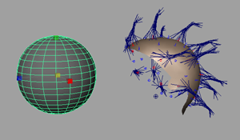
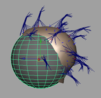

“移植头发”(Transplant Hair)功能有许多用途。例如，可以创建一片头发样式（如鬓角或胡子），然后将头发复制到目标曲面，就像在头发面片上“盖戳”。
头发系统只能移植到 NURBS 或多边形曲面。
下列情况使用头发预设。但是，您可以移植任何类型的头发系统。
将“头发预设”(Hair Preset)移植到其他曲面
- 导入“头发预设”(Hair Preset)（假发）。
请参见使用头发预设创建 nHair。
- 缩放假发来与目标曲面密切匹配。

- 将目标曲面贴近假发。

- 选择假发对象的任何部分（例如，毛囊或 pfxHair）。
- 按住 Shift 键的同时选择目标曲面。
- 选择nHair > 移植头发(nHair > Transplant Hair) >
 ，然后设定所需选项。请参见移植头发(Transplant Hair)选项。
，然后设定所需选项。请参见移植头发(Transplant Hair)选项。
如果禁用“复制毛囊”(Copy Follicles)，则移植头发之后，假发对象上不会有任何毛囊，从而确认移植。
- 删除基础假发对象。